편지 · 프로필 교환 · MY 상세를 시연본에서 한 장씩 찍었어요. 크게 보면 두 가지예요. 일을 끝낸 순간(보냄 · 수락)에 반응이 알림 한 줄뿐이고, 안쪽 화면 몇 개가 아직 예전 틀(큰 명조 제목 + 회색 상자 + 파란 버튼)로 남아 있어요.
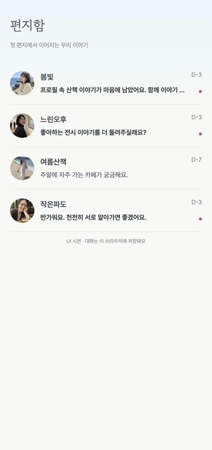
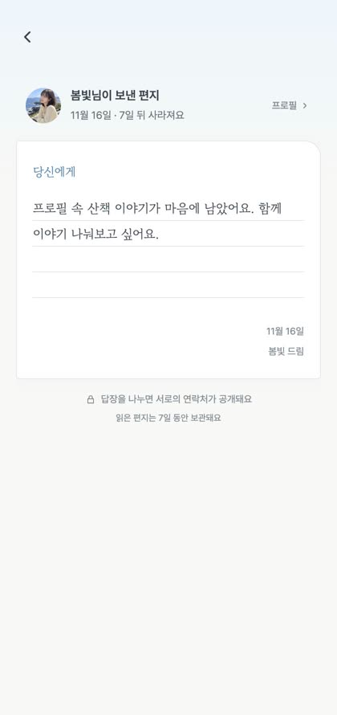
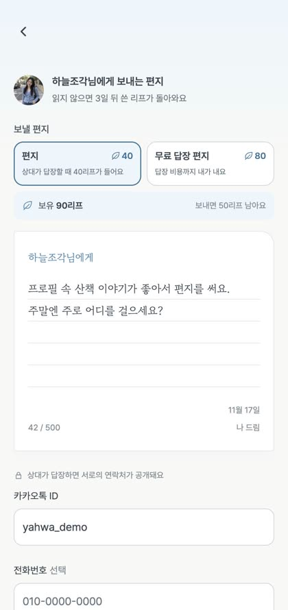
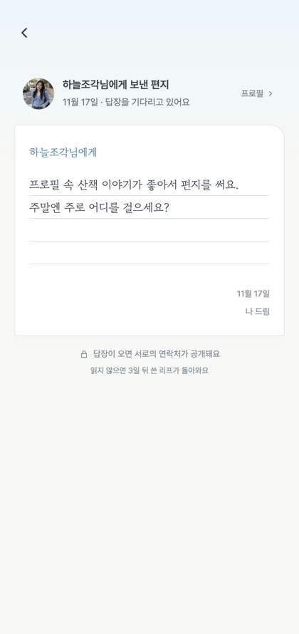
누르면 바로 보낸 편지 화면으로 넘어가고, 검은 알림 "시연 편지를 보냈어요."가 아래 안내 줄을 가려요. 40리프를 쓰는 가장 큰 행동인데 반응이 가장 작아요.
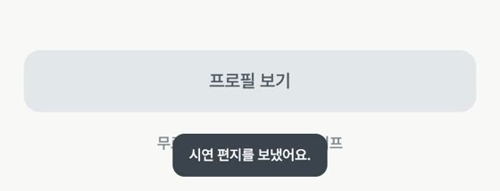
답장을 기다리는 화면이라 할 일이 없는데, 회색 큰 버튼이 아래를 차지해요.
보유 리프 줄 · 자물쇠 안내 · "둘 중 하나는 적어 주세요."까지 연락처 쪽에 글이 많고, 편지 종류 카드 두 개가 파란 테두리로 먼저 눈에 들어와요.
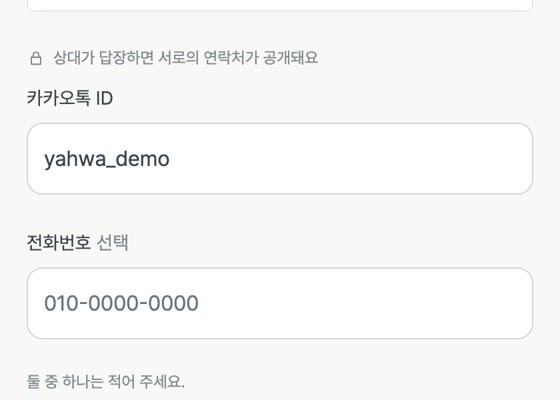
편지지 아래 회색 안내 두 줄 뒤로 큰 빈 공간. "당신에게"만 파란 글씨라 뉴트럴 원칙에서 색이 하나 더 들어가 있어요.
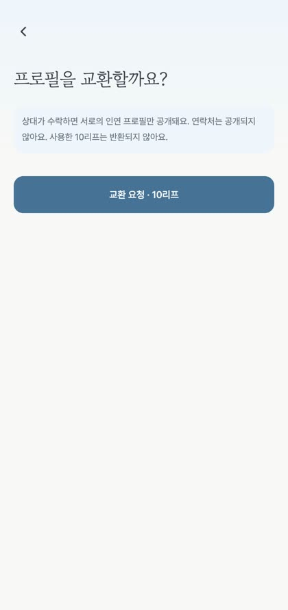
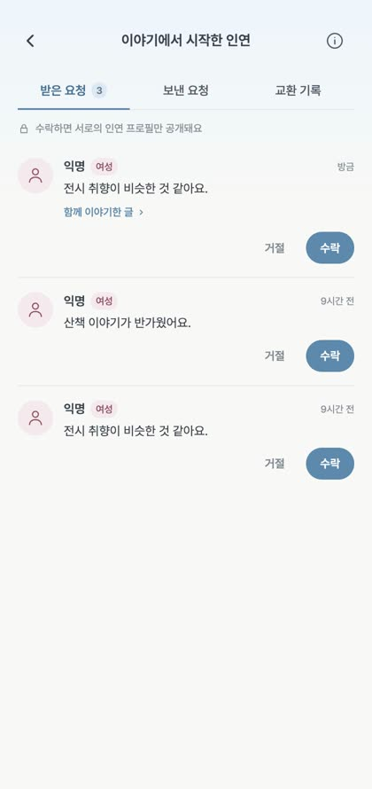
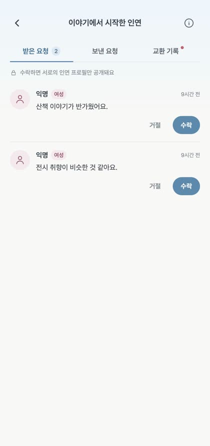
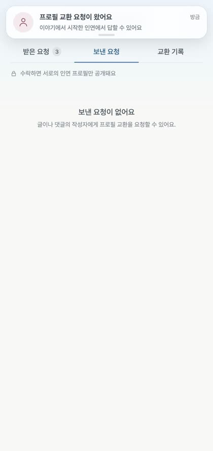
머리 줄 없이 큰 명조 제목 + 회색 상자 + 파란 버튼만. 누구에게, 어떤 글에서 요청하는지도 안 보여요.
수락은 줄이 왼쪽으로 빠지고 "프로필을 교환했어요 · 교환 기록에서 볼 수 있어요" 알림만. 서로의 프로필이 열리는 순간인데 조용해요.
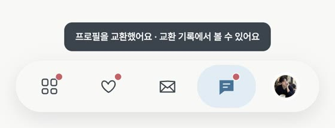
마음함은 검정 글씨 · 검정 밑줄로 바꿨는데, 여기는 파랑 글씨 · 파랑 밑줄 · 하늘 숫자칩이에요.
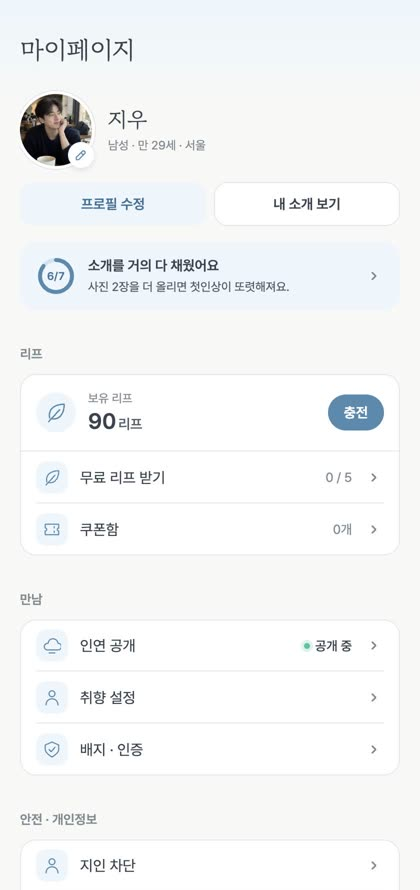
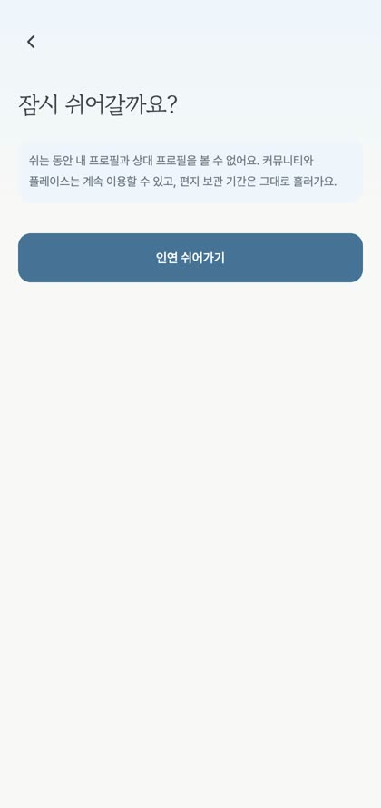
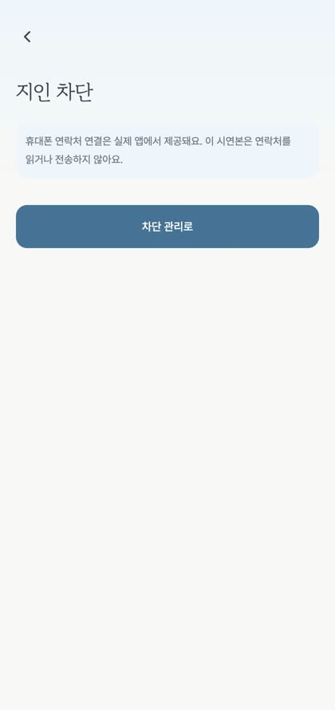
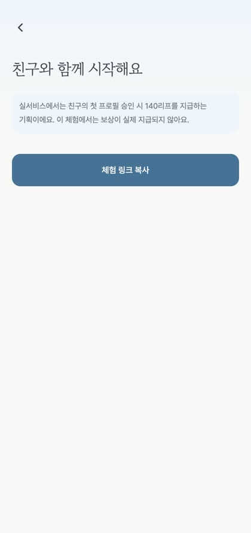
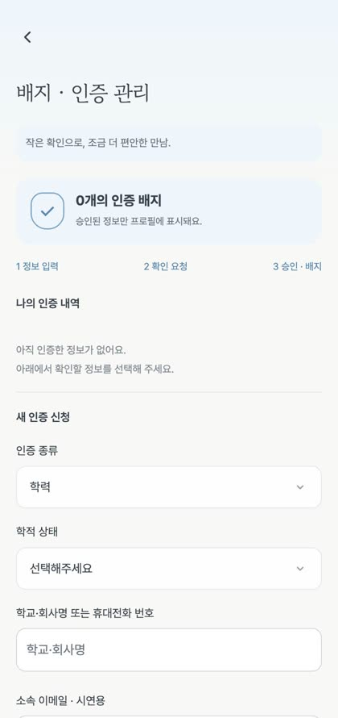
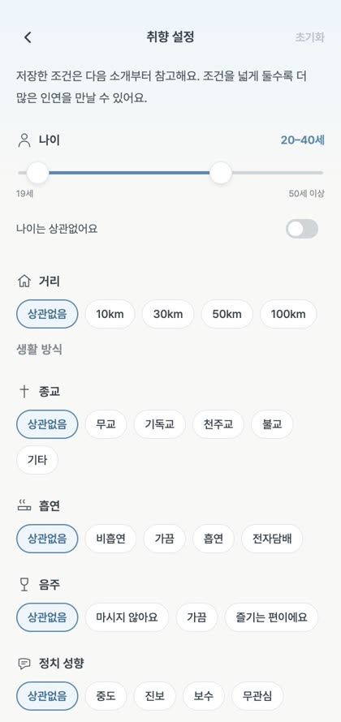
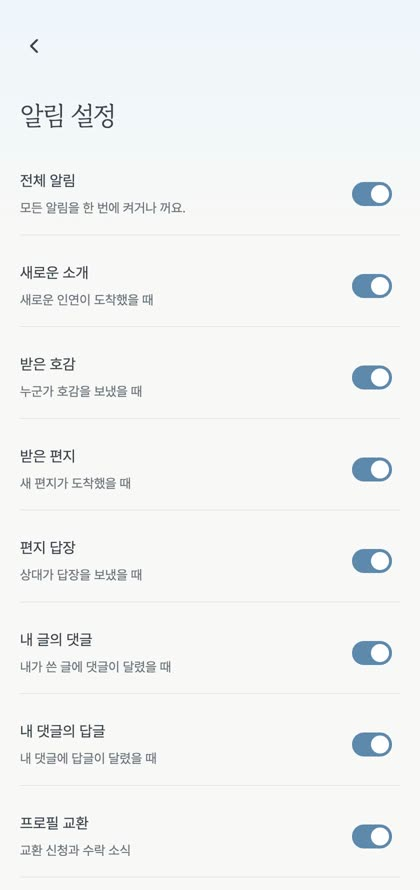
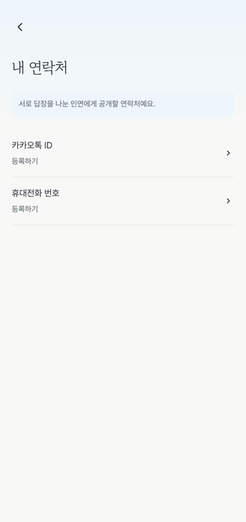
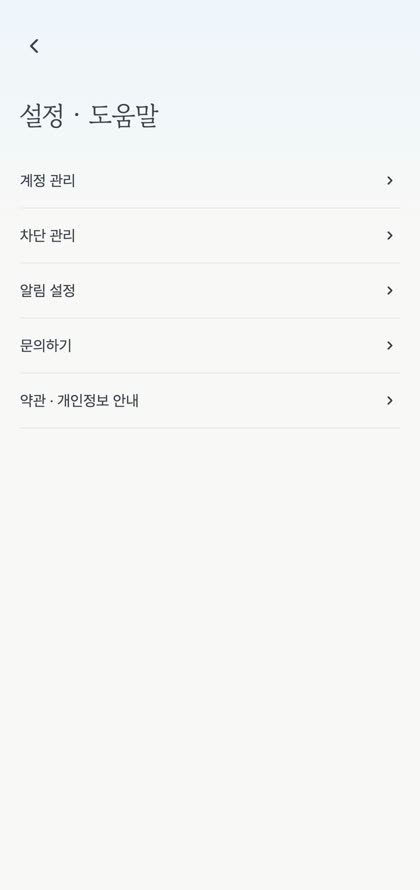
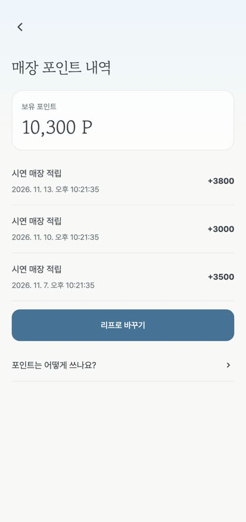
취향 설정 · 교환은 가운데 제목 머리 줄, 나머지는 왼쪽 큰 명조 제목. 한쪽으로 맞추면 안쪽 화면이 한 앱처럼 보여요.
셋 다 명조 제목 + 회색 상자 + 파란 버튼뿐이에요. 인연 공개는 지금 공개 중인지도 안 보이고 "잠시 쉬어갈까요?"부터 나와요.
"1 정보 입력 · 2 확인 요청 · 3 승인·배지"가 작은 파란 글씨로 벌어져 있고, 빈 "나의 인증 내역" 칸과 아래 안내 덧글이 길어요.
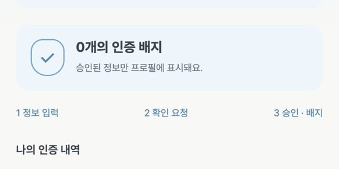
"생활 방식"이 거리 아래에, "믿음"이 정치 성향 아래에 붙어 있어요. "인증한 인연 먼저 보기"는 체크 아이콘과 토글이 둘 다예요.
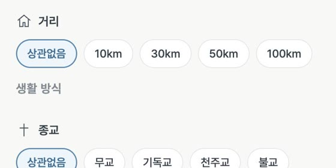
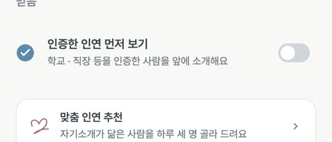
"프로필 수정"은 하늘 바탕, "내 소개 보기"는 흰 바탕 + 선이에요.
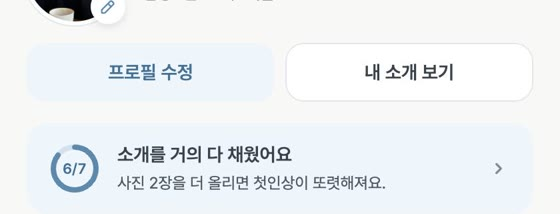
"프로필 공개 설정 · 최근 활동 표시"가 알림 목록 뒤에 붙어 있고, 시연 안내 덧글이 두 군데 있어요.
버튼은 호감으로 바꿨는데, 프로필 툴팁 "마음이 가면 관심을 보내 보세요."와 무료 리프 미션 "첫 관심 보내기"는 아직 관심이에요.
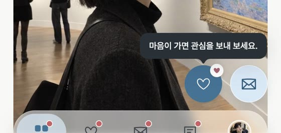